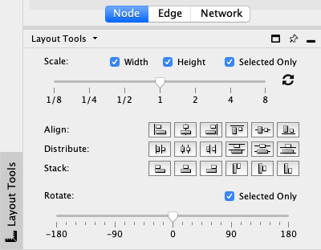
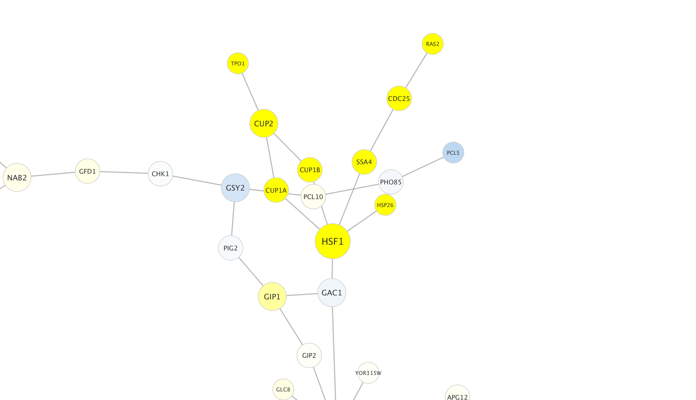
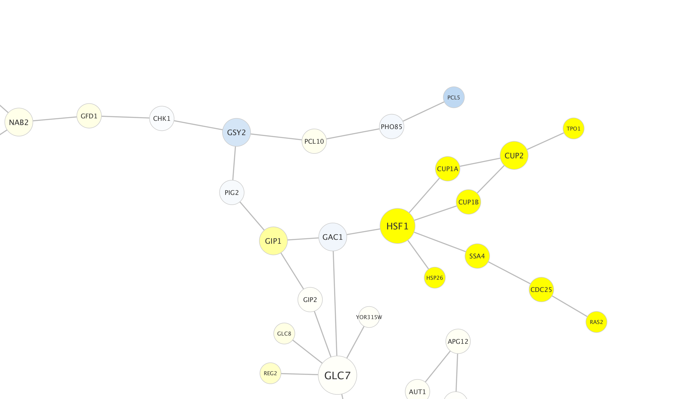
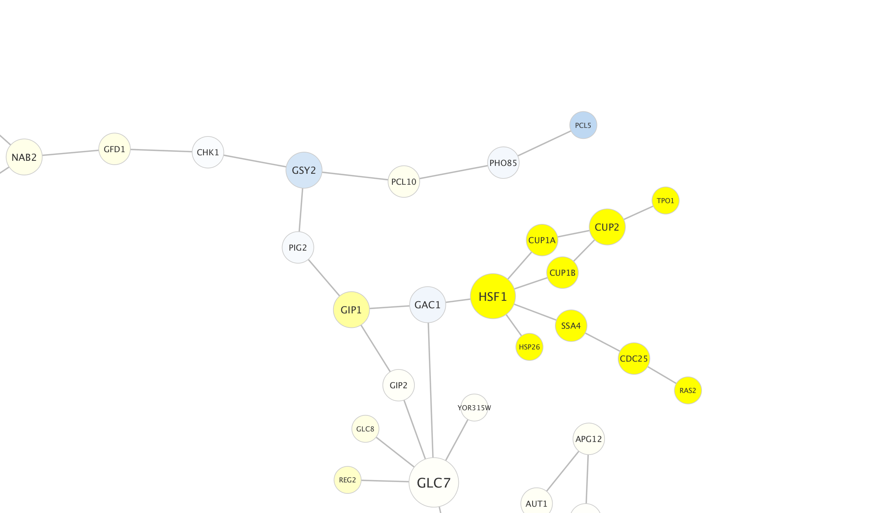

Advanced Visualization: Adjusting the View
This short protocol reviews how to adjust the network view in Cytoscape.

Adjusting the View
Node layout tools provide important tools to help adjust the final look of a network, and are available under
- Scaling of width, height for all or selected nodes.
- Align nodes
- Distribute nodes
- Stack nodes
- Rotate all or selected nodes

Rotate Nodes
For example, we can select a part of the network and rotate it.
- Select a set of nodes in the network.
- In the
Layout Tools , check theSelected Only checkbox in theRotate section. - Move the degree slider to 90.
Notice that the selected nodes are rotated 90 degrees.


Scale Nodes
Similarly, we can scale a set of nodes in a network.
- With the same set of nodes selected, check the
Selected Only checkbox in theScale section. - Move the degree slider to the left, about 1/4 point.
Notice that the selected nodes are now scaled closer to each other.
